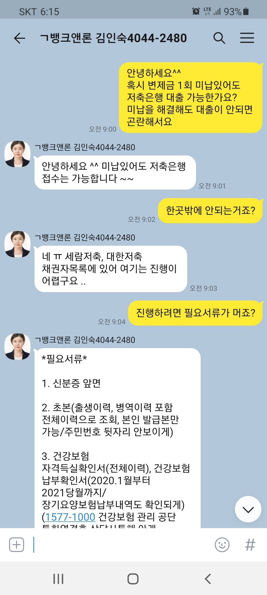
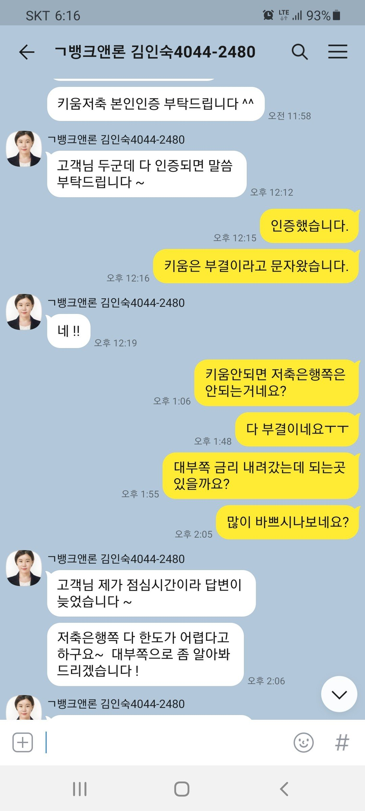
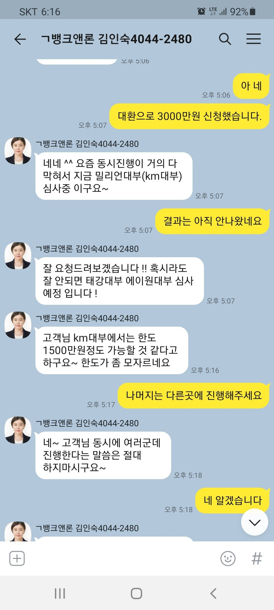
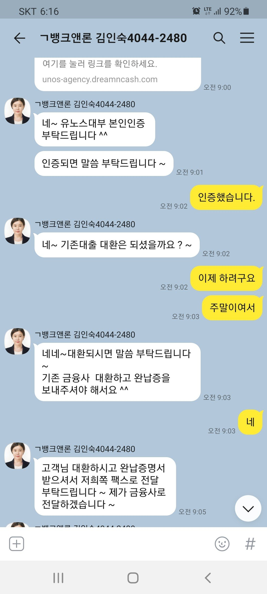
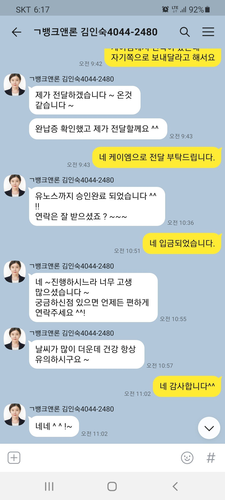

[개인회생자대출] 김인숙과장님 덕분에 대환대출 받았습니다.
재직형태 : 직장인
재직기간 : 6년 7개월
4대보험유무 : 가입
소득 : 연봉 8000만
신용등급 : 10등급
채무내역 : 대부 3곳 3000만
필요서류 : 신분증, 초본, 건강보험 자격득실확인서, 건강보험 납부확인서, 통장 입출금내역 3개월, 통장사본
7월에 대부금리 인하가 되어서 기존 대부를 대환하려고 김인숙과장님께서 상담후 저축은행을 알아봐주셨는데 부결되어 대부쪽으로 알아봐주셔서 4% 인하된 대환대출을 진행해주셨습니다.
회생 변제 미납금 1회랑 대부 3곳 대환으로 대부2곳에 3000만원 받아서 정리하였습니다.
너무나도 친절하시고 꼼꼼하게 잘해주신 김인숙과장님께 다시한번 감사의 말씀드립니다.




